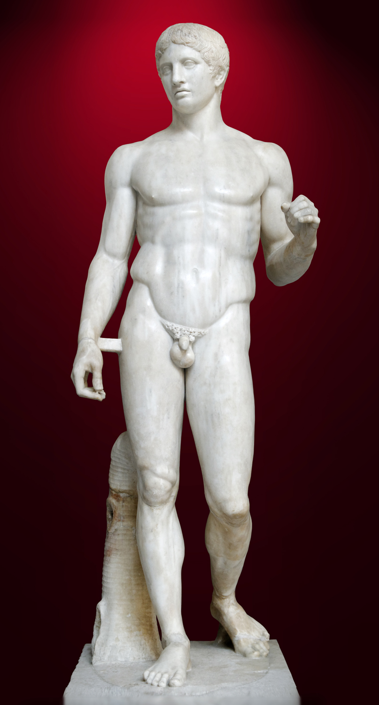
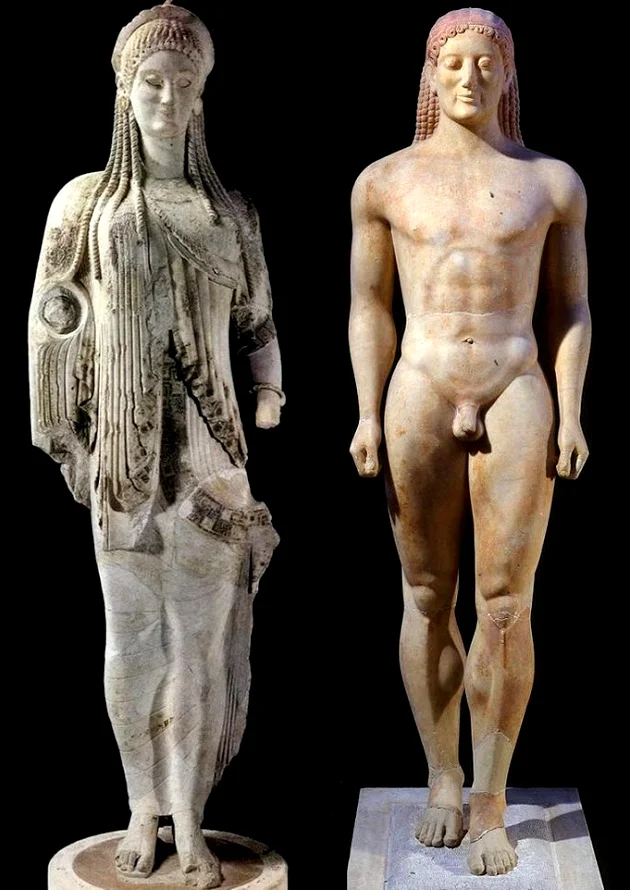

A estética é area da filosofia que investiga, fundamentalmente, a palavra ''estetica'' vem do grego aisthesis, que significa -dentre outras coisas- ''faculdade de sentir'' ou ''compreensão pelos sentidos''
A arte grega abarca todas as manifestações artísticas e revela a história, a estética e mesmo a filosofia desta civilização. O povo grego foi na antiguidade um dos que exibiam manifestações culturais mais livres, rendendo-se pouco às ordens de reis e sacerdotes, pois acreditavam que o ser humano era a concepção mais incrível do universo. A arte grega passou pelos períodos arcaico, clássico e helenístico, e cada uma dessas fases históricas, influenciou a elaboração das obras.
 